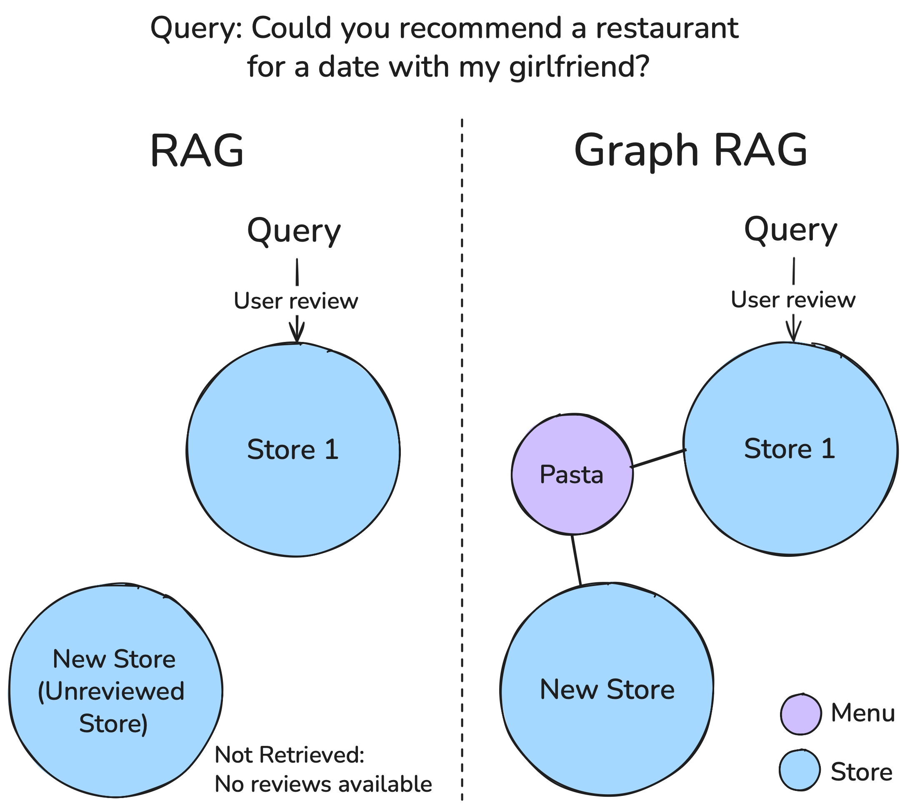
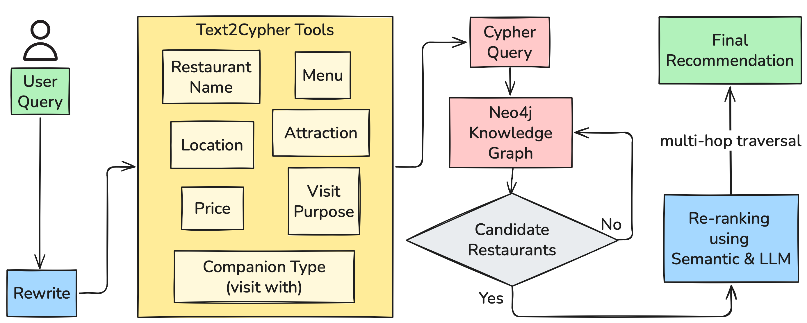

GuideRec: GraphRAG System Design for User Intent-Driven Dining Experience Recommendation
Minsang Namgoong, Hyeonwoo Kim, Youngsang Jeong, Sanghyeon Lee, Kyeongchan Lee,
Namjoon Lee, SunHyeok Park, Seonjin Hwang, Dongju Park
Restaurant recommendation for unfamiliar destinations, evaluated on Jeju Island tourism data
Motivation
Tourists struggle to find suitable restaurants in unfamiliar places, where local knowledge is thin and preferences are hard to put into a keyword search.
Three recurring failure modes motivate the work: multi-constraint natural-language queries (occasion, companions, budget, cuisine all at once), cold-start restaurants with few or no reviews, and the need for robust fallback when constraints are too narrow to match anything.
A review-only retrieval baseline can surface only what has been reviewed — a new, unreviewed restaurant stays invisible even if it fits the visit context perfectly, unless the index also covers structured attributes beyond review text.
Why GraphRAG

A review-text-only RAG baseline retrieves stores with matching reviews and misses unreviewed restaurants. GraphRAG instead traverses structured relations (e.g., shared menu items) to surface relevant new stores.
GuideRec builds a knowledge graph of Jeju Island restaurants from NAVER Map, Google Maps, and Kakao
Map data. Node types capture visit context directly — STORE, CITY/REGION,
ATTR (nearby attractions), VISIT_WITH (companion type), VISIT_PURPOSE, and
REVIEW — so that structured filtering (price, location, menu) and semantic review search can
run together instead of one substituting for the other.
System Design

GuideRec's three-phase pipeline: intent extraction and query rewriting, graph-based candidate retrieval with a semantic-similarity fallback, and LLM re-ranking.
User Intent Extraction — an LLM rewrites ambiguous queries via few-shot prompting, then a Field Detection module maps them onto seven constraint types (restaurant name, price, location, menu, attraction, visit purpose, companion type).
Candidate Selection via GraphRAG — the structured fields compile into a Cypher query executed on a Neo4j knowledge graph (up to 500 candidates); results are semantically re-ranked by embedding similarity against the rewritten query. If Cypher retrieval yields fewer than six candidates, a FastRP graph-embedding fallback searches structurally similar restaurants instead.
Final Selection — PALR (Prompt-based Active List Ranking) has the LLM holistically weigh up to six candidates and produce the top three, with a natural-language explanation for each.
Evaluation
Rather than relying only on offline ranking metrics, GuideRec was evaluated through a user-centric qualitative study: participants stated their travel companions and food preferences, interacted freely with the system, then completed a questionnaire.
The evaluation follows the ResQue framework, scoring usability, reliability, and quality indicators alongside service reuse intention — measures that are closer to what determines whether a recommender is actually useful than static Recall@K or nDCG.
Takeaway: GuideRec is designed so that graph-structured constraint retrieval plus a semantic
fallback can surface cold-start restaurants a review-only baseline would miss, while PALR re-ranking
keeps the final explanation grounded in the user's actual intent. The qualitative study measured
perceived usability and reuse intention rather than head-to-head retrieval metrics against that
baseline, so this is the system's design goal, not yet a benchmarked result.